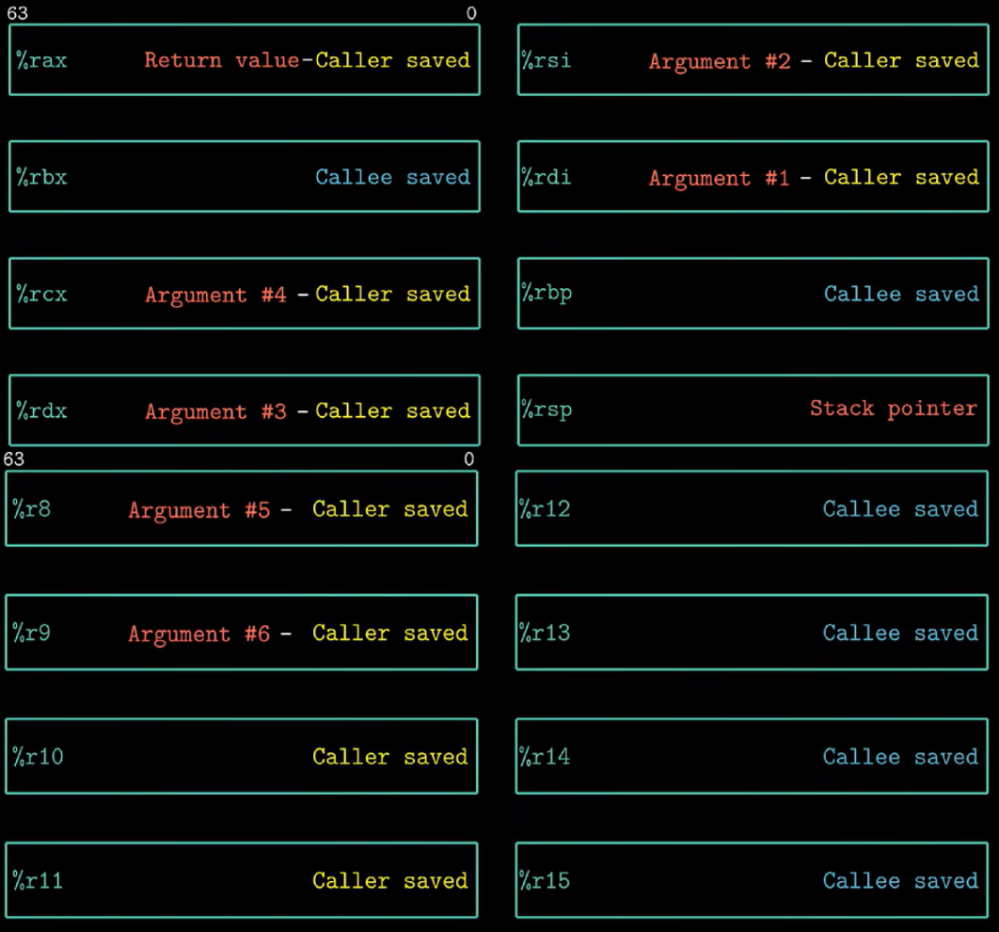
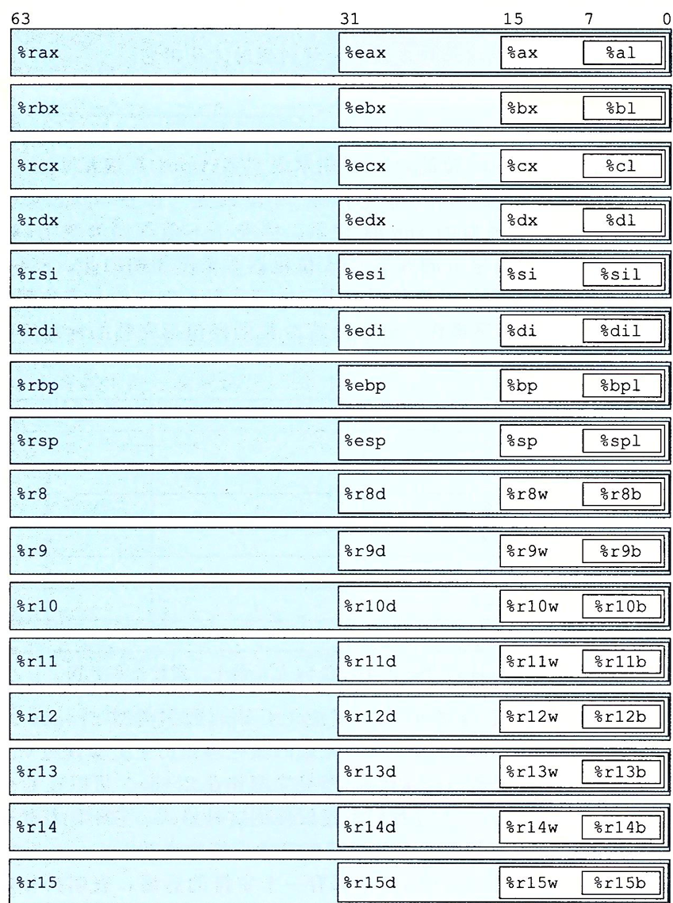
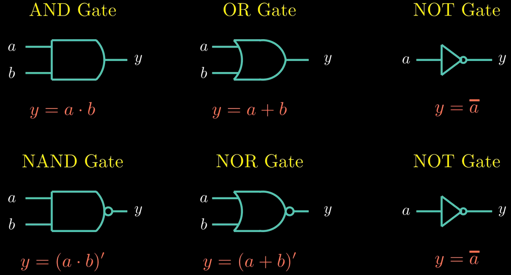
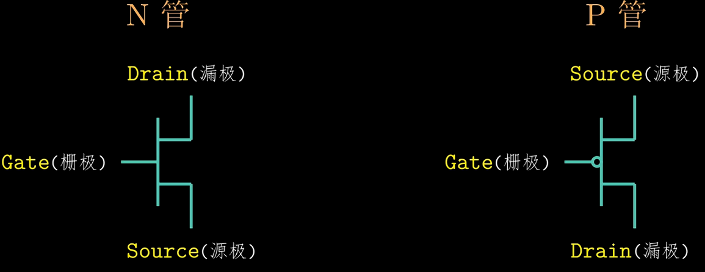
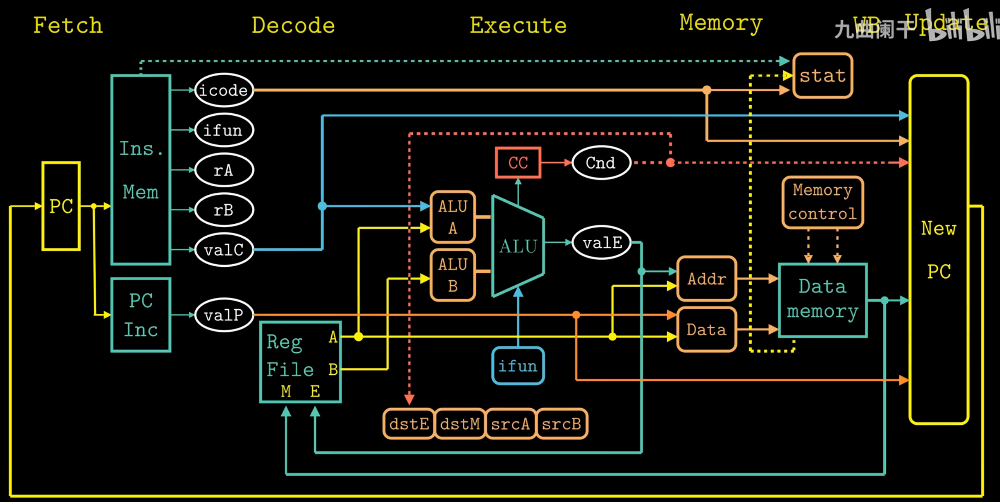
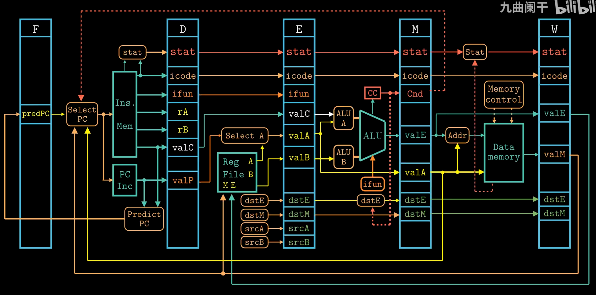
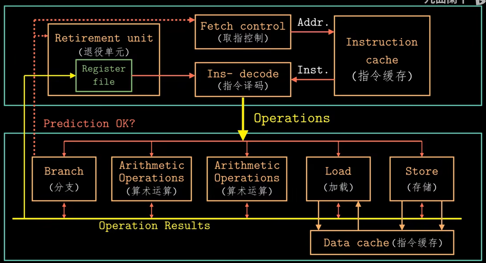

Chapter3
CISC [optimized for compact code size]
Size of Data Type in IA32
| C declaration | Intel data type | Assembly-code suffix | Size (bytes) |
|---|---|---|---|
| Byte | |||
| Word | |||
| Double word | |||
| Quad word | |||
| Quad word | |||
| Single precision | |||
| Double precision |
Register


Operands
-
Immediate
-
Register
-
Memory Reference Immediate & Base Register & Index Register & Scale Factor (1,2,4,8)
| Type | Form | Operator Value | Name |
|---|---|---|---|
| Immediate | Immediate | ||
| Register | Register | ||
| Memory | Scaled Indexed | ||
| Memory | Absolute | ||
| Memory | Indirect | ||
| Memory | Base + Displacement | ||
| Memory | Indexed | ||
| Memory | Indexed | ||
| Memory | Scale Indexed | ||
| Memory | Scale Indexed | ||
| Memory | Scale Indexed |
Operation code
-
Movement
-
[
movb,movw,movl,movq,movabsq]Source operand (Immedita, Register, Memory); Destination operand (Register, Memory)
Two operands of a move instruction cannot both be memory references. (It is necessary to first move the source memory reference into a register, and then move it to the destination memory reference.)
movlwrites 32 bits of data to the lower half and then automatically zero-extends the value into the upper 32 bits. (In x86-64, any instruction that generates a 32-bit result for a register will set the upper 32 bits of that register to zero.)movqcan only be 32 bits (sign-extended to 64 bits), whereasmovabsqcan be 64-bit but the destination must be a register. -
[
movzbw,movzbl,movzwl,movzbq,movzwq]movzlqdoes not exist because ofmovlinstruction. -
[
movsbw,movsbl,movswl,movsbq,movswq,movslq,cltq]cltqsame asmovslq %eax, %rax
-
-
Stack
let a quad number be the example
-
subq $8 %rsp movq %rbq,(%rsp) -
movq (%rsq),%rax addq $8, %rsp
-
Load Effective Address
Computes effective address and stores it in destination register
Unary Operations
| Instructions | Effect |
|---|---|
inc D | |
dec D | |
neg D | |
not D |
Binary Operations
| Instructions | Effect |
|---|---|
add S D | |
sub S D | |
imul S D | |
xor S D | |
or S D | |
and S D |
Shift Operations
| Instructions | Effect |
|---|---|
sal D | |
shl D | |
sar D | Arithmetic Right Shift |
shr D | Logical Right Shift |
Shift instructions can shift by an immediate value, or by a value placed in the single-byte register %cl.
Condition Code
-
Carry Flag [check for overflow in unsigned operations]
-
Zero Flag
-
Sign Flag
-
Overflow Flag
-
Similar to
sub, but it only sets the condition codes without changing the value of the destination register.When
S == D, .It will set the condition codes based on the result of .
-
Similar to
and, but it only sets the condition codes without changing the value of the destination register.When
S & D == 0, .
Set Instructions
| Instruction | Effect | Description |
|---|---|---|
sete D | ||
setne D | ||
sets D | negative | |
setns D | nonnegative | |
setg D | Signed | |
setge D | Signed | |
setl D | Signed | |
setle D | Signed | |
seta D | Unsigned | |
setae D | Unsigned | |
setb D | Unsigned | |
setbe D | Unsigned |
Jump Instructions
| Instruction | Jump Condition | Description |
|---|---|---|
jmp Label | Direct Jump | |
jmp *Operand | Indirect Jump | |
je Label | ||
jne Label | ||
js Label | Negative | |
jns Label | Nonnegative | |
jg Label | Signed | |
jge Label | Signed | |
jl Label | Signed | |
jle Label | Signed | |
ja Label | Unsigned | |
jae Label | Unsigned | |
jb Label | Unsigned | |
jbe Label | Unsigned |
Conditional Move Instructions
| Instruction | Move Condition | Description |
|---|---|---|
cmove S, R | ||
cmovne S, R | ||
cmovs S, R | Negative | |
cmovns S, R | Nonnegative | |
cmovg S, R | Signed | |
cmovge S, R | Signed | |
cmovl S, R | Signed | |
cmovle S, R | Signed | |
cmova S, R | Unsigned | |
cmovae S, R | Unsigned | |
cmovb S, R | Unsigned | |
cmovbe S, R | Unsigned |
Loop
do-while, while, and for loops can be implemented by combining conditional tests and jumps.
Switch
switch is compiled into a jump table. The execution time of the switch statement is irrelevant to the number of cases.
Transfer Control
| Instruction | Description |
|---|---|
call Label | Procedure Call (Direct) |
call *Operand | Procedure Call (Indirect) |
ret | Return from Procedure Call |
Data Transfer
The registers' names depend on the size of the data type being passed.
If a function has more than 6 integer parameters, the additional arguments must be passed on the stack. Note that the argument 7 is located at the top of the stack. All stack-passed arguments are aligned to multiples of 8 bytes.
Pointer
| Expression | Type | Value | Assembly Code |
|---|---|---|---|
E | int* | movq %rdx, %rax | |
E[i] | int | movl (%rdx, %rcx, 4), %eax | |
&E[i] | int* | leaq 8(%rdx, %rcx, 4), %rax | |
&E[i] - E | long | movq %rcx, %rax |
Notes:
-
&E[i] - Eyields typelong(specificallyptrdiff_t) because pointer subtraction returns the number of elements between them as a signed integer. -
int*usesmovq(notmovl) because pointers are 64-bit addresses in x86-64.
Nested Arrays
T D[R][C] , is the size of data type T in bytes.
Struture & Union
Structure
| Types | |
|---|---|
Notes:
-
The address of any K-byte basic object must be a multiple of .
-
The offset of the first member is always 0 in a structure.
-
The compilers probably add some bytes at the end of a structure to ensure that each element in an array of structures could satisfy its alignment requirements.
Union
The total size of a union equals the size of its largest field.
Application
Buffer Overflow
Three protection mechanisms to thwart buffer overflow attacks:
-
Stack Randomization Address-Space Layout Randomization (ASLR)
-
Stack Corruption Detection Place a random canary value between local buffers and critical stack data to detect buffer overflows.
-
Limiting Executable Code Regions
Dynamic Stack Frame
%rbp is base pointer/frame pointer dynamic stack frame
Floating-point Code
Chapter 4 Processor Architecture
Logic Design and Hardware Control Language (HCL)
Logic Gate

CMOS

Process
For Y86-84 :

-
Fetch
- Read instruction bytes from memory using PC:
icode:ifun(instruction specifier)rA, rB(register specifiers)valC(8-byte constant)
- Compute next instruction address →
valP
- Read instruction bytes from memory using PC:
-
Decode
- Read up to two operands from registers
rA, rB→valA, valB- For
popq,pushq,call,ret: also read from%rsp
-
Execute
- Compute (ALU/address/stack) →
valE - Set condition codes
- Conditional moves: check CC, update dest register
- Jumps: decide branch
- Compute (ALU/address/stack) →
-
Memory
- Write to memory
- Read from memory →
valM
-
Write Back
- Write up to two results to registers
-
Update
- Set PC to next instruction address
Pipelining
-
Throughput the number of instructions in one second.
GIPS: Giga-Instructions Per Second
-
Circuit Retiming
Repositions registers within a design to optimize performance or area, without altering the system’s input/output behavior. It changes the state encoding by moving delays (registers) across combinational logic elements.

Hazards
The dependency between instructions may lead to incorrect computation results.
Data Hazards
-
Stalling
Stalling prevents data hazards by pausing the pipeline until required operands are ready. This approach is simple but reduces performance.
-
Data Forwarding (Bypassing)
Data forwarding allows a result computed in a later pipeline stage to be passed directly to an earlier stage as a source operand.
-
Load/Use Hazards
A load/use hazards occurs when an instruction requires a value that is still being loaded from memory by the previous instruction. Since the memory read completes late in the pipeline, forwarding cannot resolve the dependency in time, causing a stall.
Control Hazards
Control hazards occur when the processor cannot determine the next instruction's address during the fetch stage. In a pipelined processor, this typically happens for ret instructions and mispredicted conditional jumps.
-
retInserting bubbles to wait for the return address to be determined. -
Conditional Jump Branch mispredictions are handled by cancelling the erroneously fetched instructions through the insertion of pipeline bubbles (or via instruction squashing) in the decode and execute stages.
Pipelined Y86-64 Implementations
Fetch Stage
- Sequential Execution
halt, nop, rrmovq, irmovq , mrmovq, Opq, pushq, popq, covXX, addq
- Jump Execution
call, jxx (The Select PC mechanism is employed to correct branch mispredictions.)
ret
Decode Stage
The selection logic chooses between the merged valA/valP signals and one of five forwarding sources (e_valE, m_valM, M_valE, W_valM, or W_valE) based on the instruction type and hazard detection. If no forwarding is triggered, d_rvalA (the register file read) is used as the default value.
Pipeline Control Logic
-
Stall
Keep the state of the pipeline registers unchanged. When the stall signal is set to 1, the register will retain its previous state.
-
Insert Bubbles
Setting the state of the pipeline registers to a value equivalent to a
nopinstruction. When the bubble signal is set to 1, the state of the register will be set to a fixed reset configuration.
Load/Use Data
A one-cycle pipeline stall is required between an instruction that reads a memory value in the execute stage and a subsequent instruction that uses that value in the decode stage.
Mispredicted Branches
When a branch is mispredicted as taken, the pipeline must squash the incorrectly fetched instructions from the target path and redirect fetching to the correct fall-through address.
Processing ret
The pipeline must stall until the ret instruction reaches the write-back stage.
Exception Handling
When an instruction triggers an exception, all subsequent instructions must be prevented from updating programmer-visible state, and execution must halt once the exception-causing instruction reaches the write-back stage.
| Condition | F | D | E | M | W |
|---|---|---|---|---|---|
Handling ret | Stall | Bubble | Normal | Normal | Normal |
| Load/Use Hazard | Stall | Stall | Bubble | Normal | Normal |
| Mispredicted Branch | Normal | Bubble | Bubble | Normal | Normal |
Chapter 5 Optimizing Program Performance
Capabilities and Limitations of Optimizing Compilers
Memory Aliasing
The two pointers probably reference the same memory address.
Function Calls
Performance
CPE: Cycles Per Element.
Understanding Modern Processors
Instruction Control Unit (ICU) & Execution Unit (EU)

The ICU reads instructions from the instruction cache and uses branch prediction to speculatively fetch and decode future instructions in advance. This speculative execution mechanism allows the processor to start executing operations along the predicted program path before the actual branch outcome is known. If the prediction is incorrect, all speculative results are discarded and execution restarts from the correct branch target.
Decoded instructions are broken down into micro-operations, which are then sent to the EU for execution. The EU includes arithmetic units and dedicated load/store units, each with address calculation logic, to perform memory operations via the data cache.
All along, the retirement unit tracks instruction progress to ensure sequential program semantics are preserved. Instructions remain in a queue until their results are ready and all relevant branch predictions are verified. Only then are results committed to the architectural registers. If a branch was mispredicted, the affected instructions are flushed and their results discarded, preventing any erroneous state change in the program.
Register renaming allows out-of-order execution by assigning unique tags to instruction results. When a later instruction needs a register value, it uses the tag to get the result directly once ready, avoiding waits for register writes and enabling speculative execution.
Each operation is characterized by the following metrics:
-
latency It represents the total time required to complete the operation.
-
Issue time It indicates the minimum number of clock cycles needed between two consecutive operations of the same type.
-
Capacity It refers to the number of functional units capable of executing that operation.